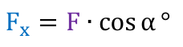
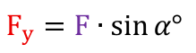

стр. 7
פירוק כוח לרכיבים
פֵּרוּק כֹּחַ לִרְכִיבִים
peruk koakh lirkhivim
перук коах лирхивим
Разложение силы на составляющие
проверено поставщикомכדי לבחון את השפעתו של כוח נטוי על גוף, נפרקו לשני רכיבים ישרי זווית. כך נמנע מהשפעה הדדית של ציר אחד על משנהו!!!
כְּדֵי לִבְחֹן אֶת הַשְׁפָּעָתוֹ שֶׁל כֹּחַ נָטוּי עַל גּוּף, נְפָרְקוֹ לִשְׁנֵי רְכִיבִים יְשָׁרֵי זָוִית. כָּךְ נִמָּנַע מֵהַשְׁפָּעָה הֲדָדִית שֶׁל צִיר אֶחָד עַל מִשְׁנֵהוּ!!!
kedei livkhon et hashpa'ato shel koakh natui al guf, nefarko lishnei rekhivim yeshrei zavit. kakh nimana mehashpa'a hadadit shel tsir ekhad al mishnehu!!!
кедей ливхон эт хашпаато шель коах натуй аль гуф, нефарко лишней рехивим йешрей завит. ках нимана мехашпаа хададит шель цир эхад аль мишнеху!!!
Чтобы исследовать действие наклонной силы на тело, её раскладывают на две взаимно перпендикулярные составляющие. Так исключается взаимное влияние одной оси на другую!!!
проверено поставщикомאיור 4 - פירוק כוח לשני רכיבים ישרי זווית
אִיּוּר 4 - פֵּרוּק כֹּחַ לִשְׁנֵי רְכִיבִים יְשָׁרֵי זָוִית
iyur 4 - peruk koakh lishnei rekhivim yeshrei zavit
июр 4 - перук коах лишней рехивим йешрей завит
Рис. 4 — Разложение силы на две взаимно перпендикулярные составляющие
проверено поставщикомFx = F ∙ cos α° (רכיב אופקי)
Fx = F ∙ cos α° (רְכִיב אֻפְקִי)
Fx = F ∙ cos α° (rekhiv ufki)
Fx = F ∙ cos α° (рехив уфки)
Fx = F ∙ cos α° (горизонтальная составляющая)
проверено поставщикомFy = F ∙ cos α° (רכיב אנכי)
Fy = F ∙ cos α° (רְכִיב אֲנָכִי)
Fy = F ∙ cos α° (rekhiv anakhi)
Fy = F ∙ cos α° (рехив анахи)
Fy = F ∙ cos α° (вертикальная составляющая)
проверено поставщикомТак напечатано в книге; вертикальная составляющая выражается через sin α — см. опечатку new:a97002:p7:fy-cos.
⚠ в книге:
Fy = F ∙cos α° (רכיב אנכי) → верно: Fy = F ∙ sin α° (רכיב אנכי)Вертикальная составляющая — катет, противолежащий углу α, поэтому Fy = F·sin α. Так она и записана выше на этой же странице (формула a97002:p7:f02), так же следует из рис. 4. ждёт подтверждения владельца
כלל הסימנים:
כְּלַל הַסִּימָנִים:
klal hasimanim:
клаль хасиманим:
Правило знаков:
проверено поставщикомרכיב כוח יוגדר "+" (חיובי) כאשר הכוח מכוון עם כיוון הציר.
רְכִיב כֹּחַ יֻגְדַּר "+" (חִיּוּבִי) כַּאֲשֶׁר הַכֹּחַ מְכֻוָּן עִם כִּוּוּן הַצִּיר.
rekhiv koakh yugdar "+" (khiyuvi) ka'asher hakoakh mekhuvan im kivun hatsir.
рехив коах югдар "+" (хиюви) каашер хакоах мехуван им кивун хацир.
Составляющая силы считается «+» (положительной), когда сила направлена по направлению оси.
проверено поставщикомרכיב כוח יוגדר "−" (שלילי) כאשר הכוח מכוון נגד כיוון הציר.
רְכִיב כֹּחַ יֻגְדַּר "−" (שְׁלִילִי) כַּאֲשֶׁר הַכֹּחַ מְכֻוָּן נֶגֶד כִּוּוּן הַצִּיר.
rekhiv koakh yugdar "−" (shlili) ka'asher hakoakh mekhuvan neged kivun hatsir.
рехив коах югдар "−" (шлили) каашер хакоах мехуван негед кивун хацир.
Составляющая силы считается «−» (отрицательной), когда сила направлена против направления оси.
проверено поставщикомФормулы

оригинал a97002:p7:f01 проверено поставщикомрасчёт:
F*cos(alpha) · углы: deg| символ | עברית | русский | ед. |
|---|---|---|---|
| F_x | רכיב כוח על ציר ה-x (רכיב אופקי) | составляющая силы по оси x (горизонтальная) | N |
| F | כוח נטוי | наклонная сила | N |
| \alpha | זווית בין הכוח F לציר ה-x | угол между силой F и осью x | ° |

оригинал a97002:p7:f02 проверено поставщикомрасчёт:
F*sin(alpha) · углы: deg| символ | עברית | русский | ед. |
|---|---|---|---|
| F_y | רכיב כוח על ציר ה-y (רכיב אנכי) | составляющая силы по оси y (вертикальная) | N |
| F | כוח נטוי | наклонная сила | N |
| \alpha | זווית בין הכוח F לציר ה-x | угол между силой F и осью x | ° |
Рисунки
 угол α①наклонная сила F②горизонтальная составляющая Fx③вертикальная составляющая Fy④
угол α①наклонная сила F②горизонтальная составляющая Fx③вертикальная составляющая Fy④- ① α — угол α
- ② F — наклонная сила F
- ③ Fx — горизонтальная составляющая Fx
- ④ Fy — вертикальная составляющая Fy